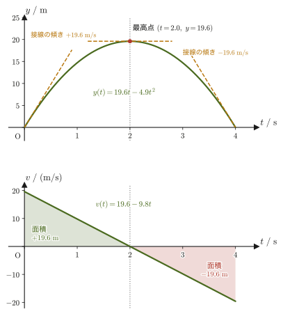

第1章運動の記述 — 位置・速度・加速度とベクトル
高校物理では，物体の運動を「速さ」や「加速度」という大きさだけの数値で表し，公式 $v=v_0+at$，$x=x_0+v_0t+\frac12at^2$，$v^2=v_0^2+2a(x-x_0)$ を覚えて使ってきたはずである．しかし，これらの公式がなぜ成り立つのか，そしてボールを斜め上に投げたときのように運動が1本の直線上ではなく平面や空間で起こる場合にどう書き直せばよいのかは，高校の範囲だけでは十分に説明できない．大学の力学は，この「なぜ」と「どう書き直すか」に答えるところから始まる．
鍵になる考え方は2つある．第一に，位置・速度・加速度を「大きさと向きを持つ量」——ベクトル（vector）——として扱うこと．第二に，速度を「位置の時間変化率」，加速度を「速度の時間変化率」，すなわち微分として定義しなおすことである．この2つの道具を手に入れると，高校で暗記した3つの公式は，「加速度が一定である」という条件のもとで加速度を2回積分した結果にすぎないことが分かる．
本章は，第2章以降を読み進めるために必要な言葉と道具——質点というモデル，位置・変位・速度・加速度のベクトルによる定式化，SI単位系，そして力学のいたるところで使われる内積・外積の予告——を，ゼロから組み立てる章である．この章を終えると，(1) 任意の運動の速度・加速度を微分で計算でき，(2) 高校の3公式を自力で導出でき，(3) 単位と次元で式の検算ができるようになる．
- 第1章（本章） 運動の記述——位置・速度・加速度をベクトルとして定式化し，高校物理の公式を導き直す．
- 第2章 ニュートンの運動の法則——運動方程式 $\bm F=\dd\bm p/\dd t$，運動量保存則，力のモーメントと角運動量．
- 第3章 曲線運動の記述——極座標と，接線・法線方向に分解した加速度．
- 第4章 仕事とエネルギー——内積を使った仕事の定義，保存力とポテンシャルエネルギー．
- 第5章 放物運動と円運動——空気抵抗のある放物運動，向心加速度．
- 第6章 極座標で見る運動と2次曲線——楕円・放物線・双曲線としての軌道．
- 第7章 単振動・減衰振動・強制振動——ばね振り子と共振．
- 第8章 中心力と惑星の運動——ケプラーの法則と万有引力．
- 第9章 運動座標系と慣性力——遠心力とコリオリ力．
- 第10章 質点系と剛体——重心の運動，慣性モーメント，回転の運動方程式．
- 質点（大きさを無視した点）というモデルと，それが妥当な状況・妥当でない状況の見分け方
- 位置ベクトル $\bm r(t)$，変位ベクトル $\Delta\bm r$，速度ベクトル $\bm v=\dd\bm r/\dd t$，加速度ベクトル $\bm a=\dd^2\bm r/\dd t^2$ の定義（成分ごとの微分として計算する方法を含む）と，$\dot x,\ddot x$ という時間微分の記法
- スカラー量とベクトル量の区別，成分・大きさ・単位ベクトル $\bm e_x,\bm e_y,\bm e_z$ の使い方
- SI基本単位（m, kg, s など）と組立単位，SI接頭辞と単位換算，次元解析の考え方
- 加速度が一定であるという条件を表す微分方程式 $\ddot x=a$ を2回積分して，高校物理の3公式 $v=v_0+at$，$x=x_0+v_0t+\frac12at^2$，$v^2=v_0^2+2a(x-x_0)$ を導く方法，および自由落下・鉛直投げ上げへの応用
- $x$-$t$ グラフ・$v$-$t$ グラフの傾きと面積が持つ意味（微分・積分の図形的な対応）
- 内積・外積の復習と，力学で内積が仕事として，外積が力のモーメント・角運動量として登場する場面の予告
関連するノート：本章はノートにない内容を補った章である．関連するノート：望月泰英『物理学ノート 力学』（手書き講義ノート）．
1.1 質点というモデル
ボール，自動車，地球——これから力学で扱う「物体」は，どれも大きさと形を持ち，内部にさまざまな構造を持っている．たとえば自動車が走るとき，タイヤは回転し，車体はわずかに傾いたり振動したりする．厳密に言えば，自動車という物体の運動を完全に記述するには，車体のすべての点がそれぞれどう動くかを追いかけなければならない．しかし，「自動車が東京から大阪まで移動する」という運動全体の道筋（軌道）だけに関心があるなら，車体の大きさ（数メートル）は移動距離（数百キロメートル）に比べてあまりに小さく，車のどの点に注目しても軌道の違いはほとんど無視できる．このようなとき，物体の大きさや内部の構造をいっさい無視して，「質量を持つが大きさを持たない点」として扱う近似がきわめて有効になる．
定義1.1 質点
物体の大きさ・形・内部構造を無視し，物体の全質量 $m$ が，物体の重心（center of mass．第10章で定義する）にあるただ1つの幾何学的な点に集まっているとみなすモデルを質点（mass point，または particle）という．質点の（ある時刻での）位置は，位置ベクトル $\bm r$（1.2節で導入する）ただ1つで指定され，物体の性質は質量 $m$ だけで代表される．なお，運動を予言するには位置のほかに速度も必要になる（1.4節と第2章で見る）．
イメージ：質点近似がよい近似になる条件
質点として扱ってよいかどうかは，物体そのものの大きさが絶対的に小さいかどうかでは決まらない．比べるべきは，(1) 物体自身の大きさ（代表的な長さ $L_{\text{obj}}$）と，(2) 今考えている運動の特徴的な長さ $L_{\text{motion}}$（移動距離，軌道の曲率半径，装置の大きさなど）の比である．$L_{\text{obj}}/L_{\text{motion}}\ll1$（記号 $\ll$ は「はるかに小さい」の意味）であれば，物体をどこか1点で代表させても軌道の形はほとんど変わらないので，質点近似はよい近似になる．逆にこの比が1に近い，あるいは物体自身の回転や変形そのものに関心がある場合は，質点近似は使えない——「小さいかどうか」ではなく「今考えている問題にとって無視できるかどうか」が基準である．
例題1.1 質点近似の妥当性を数値で確かめる
(a) 地球の公転運動を考える．地球の半径を $R_\oplus\approx6.4\times10^{3}\ \mathrm{km}$，太陽からの平均距離（公転半径）を $R_{\text{orbit}}\approx1.5\times10^{8}\ \mathrm{km}$ として，比 $R_\oplus/R_{\text{orbit}}$ を求め，質点近似が良い近似かどうか判定せよ．(b) 半径 $r\approx0.6\ \mathrm{m}$ に腕を伸ばして回転するフィギュアスケーターについて，同じ比を作って（a）と比較し，質点近似が使えない理由を説明せよ．
解答 (a) 比を計算すると，
$$ \frac{R_\oplus}{R_{\text{orbit}}}=\frac{6.4\times10^{3}\ \mathrm{km}}{1.5\times10^{8}\ \mathrm{km}}\approx4.3\times10^{-5} $$であり，これは1に比べて桁違いに小さい（およそ2万3千分の1）．したがって，地球の公転軌道（1年でおよそ9.4億 km の道のり）を考える上で，地球自身の大きさ（直径約1.3万 km）は無視してよく，質点近似はきわめて良い近似である．
(b) スケーターの回転半径 $r\approx0.6\ \mathrm{m}$ に対して，スケーター自身の身長・肩幅などの体格の代表的な大きさも同程度（$0.3\sim1.7\ \mathrm{m}$ 程度）であり，比を作ると
$$ \frac{L_{\text{obj}}}{L_{\text{motion}}}\sim\frac{1\ \mathrm{m}}{0.6\ \mathrm{m}}\sim1 $$で1のオーダーになる．さらに，スケーターが腕を縮めると回転が速くなる（第2章で学ぶ角運動量保存則）という現象そのものが，体の各部分の位置関係——つまり質点に潰しては消えてしまう情報——に依存している．したがって，この問題では質点近似は使えず，体の各部分（腕・胴体など）の位置と運動を区別して扱う必要がある．すなわち，スケーターを多数の質点の集まり（質点系，第10章）として扱う．（腕を伸ばしたまま固定した状態のように形が変わらないとみなせるなら，剛体として近似することもできるが，腕をたたむと形が変わるので，回転が速くなる過程全体は剛体ではなく質点系として扱う．）
イメージ：質点・質点系・剛体という3段階のモデル
力学で物体を表すモデルには，おおまかに3段階がある．(1) 質点——大きさを無視した1点（本章から扱う）．(2) 質点系（system of mass points）——たがいに力をおよぼしあう多数の質点の集まり（第2章の運動量保存則で早くも顔を出す）．(3) 剛体（rigid body）——質点系のうち，各質点間の距離が常に一定に保たれるもの（第10章）．質点は，これら3段階の中でいちばん単純な，出発点となるモデルである．位置・速度・加速度・力といった概念を，まず要素が1つしかない質点で完全に理解しておけば，質点系や剛体は「質点の議論を，要素の数だけ足し合わせたもの」として自然に拡張できる．これが，本章（そして力学という科目全体）が質点から始まる理由である．
1.2 位置ベクトル・変位・速度・加速度
質点の運動を記述する第一歩は，空間に原点 $\mathrm O$ を固定した座標系（$x,y,z$ 軸）を用意し，各時刻 $t$ における質点の位置を，原点から質点へ向かう矢印——位置ベクトル（position vector）——で表すことである．
定義1.2 位置ベクトル
原点 $\mathrm O$ から時刻 $t$ における質点の位置まで引いた矢印を位置ベクトルといい，成分で
$$ \bm r(t)=[\,x(t),\ y(t),\ z(t)\,] $$と表す．$x(t),y(t),z(t)$ はそれぞれ質点の $x,y,z$ 座標を時刻 $t$ の関数として表したもので，位置ベクトルの成分（component）と呼ばれる．1次元（直線上）の運動だけを考えるときは，$\bm r(t)=x(t)$ のように成分1つだけで表す．
注意：太字のベクトルと矢印のベクトル
本書ではベクトル量を $\bm r,\bm v,\bm a,\bm F$ のように太字（ボールド体）で表す．これは，高校の教科書や手書きの板書で使われる矢印つきの記法 $\vec r,\vec v,\vec a,\vec F$ とまったく同じ量を指しており，単に書き方の流儀が違うだけである（姉妹編「大学数学（AD 02）」では逆に矢印の記法 $\vec y(t)$ を使っている——印刷物では太字，手書きでは矢印，というのがよくある使い分けである）．どちらの記法で書かれていても，「大きさと向きを持つ量」という中身は同じものを指す，と理解してほしい．この断りは本章だけで行い，以降の章では太字の記法に統一する．
数学の道具：スカラーとベクトル，成分・大きさ・単位ベクトル
物理量には2種類ある．質量・時間・温度・エネルギーのように，数値（と単位）だけで決まる量をスカラー量（scalar），位置・変位・速度・加速度・力のように，大きさと向きの両方を持つ量をベクトル量（vector）という．ベクトル $\bm a=[a_x,a_y,a_z]$ の $a_x,a_y,a_z$ を成分といい，$\bm a$ の大きさ（長さ）は三平方の定理から
$$ \abs{\bm a}=\sqrt{a_x^2+a_y^2+a_z^2} $$である（位置ベクトルなら，原点から質点までの距離 $\abs{\bm r}=\sqrt{x^2+y^2+z^2}$）．ベクトルの和・差とスカラー $c$ 倍は成分ごとの計算で定まる：$\bm a\pm\bm b=[a_x\pm b_x,\ a_y\pm b_y,\ a_z\pm b_z]$，$c\,\bm a=[ca_x,\ ca_y,\ ca_z]$．
座標軸は，$x$ 軸から $y$ 軸へ右ねじを回したときにねじが進む向きが $z$ 軸の正の向きになるようにとる（右手系）．各軸の正の向きを向く長さ1のベクトル
$$ \bm e_x=[1,0,0],\qquad \bm e_y=[0,1,0],\qquad \bm e_z=[0,0,1] $$を単位ベクトル（unit vector）といい，これを使うと位置ベクトルは $\bm r=x\,\bm e_x+y\,\bm e_y+z\,\bm e_z=[x,\ y,\ z]$ と書ける（「成分を並べた $[x,y,z]$」と「単位ベクトルの和」は同じものの2通りの書き方である）．詳しくは大学数学 第15章 15.1節を参照．
質点が時刻 $t_1$ から時刻 $t_2$（$t_2\gt t_1$）まで動いたとき，その間に位置がどれだけ・どの向きに変化したかを表すのが変位ベクトルである．
定義1.3 変位ベクトル
時刻 $t_1$ の位置 $\bm r(t_1)$ から時刻 $t_2$ の位置 $\bm r(t_2)$ への変位ベクトル（displacement vector）を
$$ \Delta\bm r=\bm r(t_2)-\bm r(t_1) $$と定める（ベクトルの引き算は成分ごとの引き算である）．変位ベクトルは，質点が実際にたどった経路の形にはよらず，出発点と到着点だけで決まることに注意しよう（途中で寄り道をしても $\Delta\bm r$ は変わらない）．
注意：変位と道のり，平均の速度と平均の速さ
変位 $\Delta\bm r$ は出発点と到着点だけで決まるベクトルであるのに対し，道のり（path length）は経路に沿って実際に動いた長さを足し合わせたスカラーであり，経路の形によって変わる．一般に $\abs{\Delta\bm r}\le$（道のり）であり，等号が成り立つのは直線上を折り返さずに進んだときだけである．たとえば，1周して元の場所に戻る運動では $\Delta\bm r=\bm 0$ だが，道のりは1周分の長さである．
変位を経過時間 $\Delta t=t_2-t_1$ で割ったものを平均の速度（average velocity）$\bm v_{\text{avg}}=\Delta\bm r/\Delta t$ という（ベクトル量）．一方，道のりを $\Delta t$ で割ったものは平均の速さ（average speed，スカラー量）であり，両者は一般に一致しない．
例題1.2 変位ベクトルと平均の速度
ある質点が時刻 $t_1=1.0\ \mathrm s$ に位置 $\bm r(t_1)=[1.0,\,2.0]\ \mathrm m$ にあり，時刻 $t_2=3.0\ \mathrm s$ に位置 $\bm r(t_2)=[4.0,\,6.0]\ \mathrm m$ にあった．(a) 変位ベクトル $\Delta\bm r$ を求めよ．(b) この間の平均の速度 $\bm v_{\text{avg}}=\Delta\bm r/\Delta t$（$\Delta t=t_2-t_1$）を求めよ．
解答 (a) 定義1.3より，成分ごとに引き算して，
$$ \Delta\bm r=\bm r(t_2)-\bm r(t_1)=[4.0-1.0,\ 6.0-2.0]=[3.0,\ 4.0]\ \mathrm m $$(b) $\Delta t=t_2-t_1=3.0-1.0=2.0\ \mathrm s$ なので，$\Delta\bm r$ の各成分を $\Delta t$（スカラー）で割って，
$$ \bm v_{\text{avg}}=\frac{\Delta\bm r}{\Delta t}=\frac{[3.0,\,4.0]\ \mathrm m}{2.0\ \mathrm s}=[1.5,\ 2.0]\ \mathrm{m/s} $$その大きさは $\abs{\bm v_{\text{avg}}}=\sqrt{1.5^2+2.0^2}=\sqrt{6.25}=2.5\ \mathrm{m/s}$ である．ここで求めたのはあくまで「2秒間の平均」であり，質点がその間ずっとこの速度で動いていたとは限らない——瞬間ごとの速度を知るには，次に導入する微分が必要になる．
平均の速度 $\Delta\bm r/\Delta t$ は，$\Delta t$ をどれだけの時間間隔にとるかによって値が変わってしまう．ある瞬間，たとえば時刻 $t$ における「今の速度」を知りたければ，$\Delta t$ を限りなく0に近づける極限を考えればよい——これはまさに微分の定義（大学数学 第1章 1.4節）そのものであり，ベクトルの場合も各成分ごとに同じ極限を考える（大学数学 第17章 定義17.1）．
定義1.4 速度ベクトル
位置ベクトル $\bm r(t)=[x(t),y(t),z(t)]$ の速度ベクトル（velocity vector）$\bm v(t)$ を，各成分を時刻 $t$ で微分することによって定める：
\begin{equation} \bm v(t)=\diff{\bm r}{t}=\left[\,\diff{x}{t},\ \diff{y}{t},\ \diff{z}{t}\,\right] \label{eq:1-velocity-def} \end{equation}極限で書けば $\bm v(t)=\lim_{\Delta t\to0}\dfrac{\bm r(t+\Delta t)-\bm r(t)}{\Delta t}$ であり，例題1.2の平均の速度で $\Delta t\to0$ の極限をとったものにほかならない．速度ベクトルの各成分の時間微分は，$\dot x\equiv\dd x/\dd t$（「エックス・ドット」と読む．文字の上に点を1つ打って時間微分を表す記法）を使って $\bm v=[\dot x,\dot y,\dot z]$ とも書く．ドット記法はニュートン（Newton）が使った記法であり，物理では時間についての微分にだけ使う（位置についての微分には $\dd/\dd x$ や $f'(x)$ を使う）．
平均の速度 $\Delta\bm r/\Delta t$ の向きは軌道の2点を結ぶ弦の向きであり，$\Delta t\to0$ の極限では弦の向きが軌道の接線の向きに近づく．したがって，速度ベクトルは軌道の接線の向きを向き，その大きさは速さ $\abs{\bm v}$ に等しい．
同様に，速度がどれだけ速く変化しているかを表すのが加速度ベクトルである．速度ベクトルをもう一度時間で微分すればよい．
定義1.5 加速度ベクトル
速度ベクトル $\bm v(t)$ の加速度ベクトル（acceleration vector）$\bm a(t)$ を
\begin{equation} \bm a(t)=\diff{\bm v}{t}=\diff{}{t}\left(\diff{\bm r}{t}\right)=\frac{\dd^2\bm r}{\dd t^2}=[\,\ddot x,\ \ddot y,\ \ddot z\,] \label{eq:1-accel-def} \end{equation}と定める．ここで $\ddot x\equiv\dd^2x/\dd t^2$（「エックス・ツードット」，$x$ を時刻 $t$ で2回微分したもの）は，点を2つ打って2階の時間微分を表す記法である．加速度ベクトルは位置ベクトルを時刻について2回微分したものであり，速度が一定の割合で変化する運動（後で見る等加速度運動）では $\bm a$ は定数ベクトルになる．
なぜ成分ごとに微分してよいのか
ベクトルの微分を「各成分をばらばらに，スカラー値関数として微分する」という操作で定義してよい理由は2つある．第一に，ベクトルの引き算とスカラーによる割り算がどちらも成分ごとに行われる演算だからである．詳しい確認は大学数学第17章17.1節（定義17.1とその直後の「なぜ2通りの定義が同じことになるのか」）にすでにあるので，ここでは結果だけを使う．第二に，位置ベクトルを単位ベクトルで $\bm r(t)=x(t)\,\bm e_x+y(t)\,\bm e_y+z(t)\,\bm e_z$ と展開したとき，$\bm e_x,\bm e_y,\bm e_z$ は時間が経っても動かない定ベクトルなので，微分するときに係数のように外へ出て，
$$ \diff{\bm r}{t}=\dot x\,\bm e_x+\dot y\,\bm e_y+\dot z\,\bm e_z $$となるからである．したがって，ベクトル値関数の微分は，$x,y,z$ の3つのスカラー値関数を，高校数学で習った微分公式でそれぞれ別々に微分すればよい．これは本章以降，力学のあらゆる場面で使う最も基本的な計算規則である．
ただし，この簡単な規則は基底となるベクトルが動かないときだけ成り立つ．質点の位置とともに向きが変わる単位ベクトルを使う座標系（第3章で学ぶ極座標の $\bm e_r,\bm e_\theta$ など）では，これらの単位ベクトル自身の時間微分が加わるので，成分ごとの微分だけでは済まなくなる．
速度ベクトル $\bm v$ と，その大きさ $\abs{\bm v}$ は，日常の言葉ではどちらも「速度」と呼ばれがちだが，物理では区別する．$\bm v$ は大きさと向きを持つベクトル量そのものであり，$\abs{\bm v}=\sqrt{\dot x^2+\dot y^2+\dot z^2}$（単位はどちらも $\mathrm{m/s}$）は向きの情報を捨てて大きさだけを取り出したスカラー量で，これを速さ（speed）と呼ぶ．速さが一定でも，向きが変わり続ければ速度ベクトル $\bm v$ は時々刻々変化しており，したがって加速度 $\bm a=\dd\bm v/\dd t$ は $\bm 0$ にならない——たとえば一定の速さで円を描いて回る運動（等速円運動）では，速さ $\abs{\bm v}$ は一定なのに，向きが絶えず変わるために加速度は常に中心を向いて存在する（第3章で厳密に扱う）．「速さが変わらない＝加速度が0」ではない，という点は，高校物理でも間違えやすい典型的な落とし穴なので注意してほしい．実際，速さの2乗 $\abs{\bm v}^2=v_x^2+v_y^2+v_z^2$ を時間で微分すると $2(v_x\dot v_x+v_y\dot v_y+v_z\dot v_z)=2\,\bm v\cdot\bm a$ となる（内積 $\bm v\cdot\bm a$ は1.7節で復習する）．したがって，速さが一定ならば $\bm v\cdot\bm a=0$，すなわち加速度は速度に垂直である（演習1.4(c)）．速さを変えずに向きだけを変える加速度は，速度に垂直な成分だけを持つのである．
例題1.3 位置ベクトルの成分ごとの微分
質点の位置ベクトルが，時刻 $t$ の関数として $\bm r(t)=[\,t,\ t^2,\ \sin t\,]$ で与えられている（$t$ は秒，成分はメートルで測った数値．$\sin t$ の引数は角度をラジアンで測ったもので，$\sin\omega t$ で $\omega=1\ \mathrm{rad/s}$ とおいたものである）．(a) 速度ベクトル $\bm v(t)$ と加速度ベクトル $\bm a(t)$ を求めよ．(b) $t=0$ における $\bm v(0)$ と $\bm a(0)$ を求めよ．
解答 (a) 定義1.4にしたがい，各成分を別々に $t$ で微分する．$x(t)=t$ より $\dot x=1$，$y(t)=t^2$ より $\dot y=2t$，$z(t)=\sin t$ より $\dot z=\cos t$（三角関数の微分公式．この公式は角度をラジアンで測るときにだけ成り立つ）であるから，
$$ \bm v(t)=[\,1,\ 2t,\ \cos t\,]\ \mathrm{m/s} $$さらにもう一度微分すると，$\ddot x=0$，$\ddot y=2$，$\ddot z=-\sin t$ より，
$$ \bm a(t)=[\,0,\ 2,\ -\sin t\,]\ \mathrm{m/s^2} $$(b) $t=0$ を代入すると，$\cos0=1,\ \sin0=0$ なので，
$$ \bm v(0)=[\,1,\ 0,\ 1\,]\ \mathrm{m/s},\qquad \bm a(0)=[\,0,\ 2,\ 0\,]\ \mathrm{m/s^2} $$である．この例のように，加速度が時間 $t$ とともに変化する（$z$ 成分が $-\sin t$）運動は，次節以降で扱う「加速度が一定の運動」よりも一般的な場合であることに注意しよう．
1.3 SI基本単位・組立単位と次元解析
前節で位置・速度・加速度に $\mathrm m$（メートル），$\mathrm{m/s}$，$\mathrm{m/s^2}$ という単位をつけたが，これらの単位はどこから来て，どういう規則で組み立てられているのだろうか．物理量には必ず単位が伴い，単位を落として数値だけを計算することは（有効数字の桁を間違えるのと同じくらい）重大な誤りのもとになる．本節では，現在の科学で国際的に使われている単位系（国際単位系，International System of Units，略してSI）の骨組みと，単位を武器として計算結果の正しさをチェックする「次元解析」という技術を確認する．
定義1.6 SI基本単位
SIでは，すべての物理量の単位を，次の7つの基本単位（base unit）の組み合わせとして表す：長さ・メートル（$\mathrm m$），質量・キログラム（$\mathrm{kg}$），時間・秒（$\mathrm s$），電流・アンペア（$\mathrm A$），熱力学温度・ケルビン（$\mathrm K$），物質量・モル（$\mathrm{mol}$），光度・カンデラ（$\mathrm{cd}$）．本書の第I部（力学）では，このうち長さ $[\mathrm m]$，質量 $[\mathrm{kg}]$，時間 $[\mathrm s]$ の3つだけを使う．
豆知識：基本単位は今どう定義されているか
かつてキログラムは，フランスに保管された「国際キログラム原器」という金属の分銅そのもので定義されていた．しかし物体は経年でわずかに質量が変化しうるため，2019年のSI改定により，7つの基本単位はすべて，特定の物理定数の数値を厳密に固定する（定義値とする）という方法で再定義された——たとえば秒はセシウム133原子の超微細構造遷移の周波数 $\Delta\nu_{\mathrm{Cs}}=9\,192\,631\,770\ \mathrm{Hz}$（定義値）で，メートルは光速 $c=299\,792\,458\ \mathrm{m/s}$（定義値）で，キログラムはプランク定数 $h=6.626\,070\,15\times10^{-34}\ \mathrm{J\,s}$（定義値）で定義されている．日常の計算でこの違いを意識する必要はほとんどないが，「単位とは人間が決めた取り決めである」ということを象徴する興味深い事実である．
速度の単位 $\mathrm{m/s}$ や加速度の単位 $\mathrm{m/s^2}$ のように，基本単位を掛けたり割ったりして作られる単位を組立単位（derived unit）という．力学でよく使う組立単位には，力のニュートン $\mathrm N=\mathrm{kg\,m/s^2}$（ニュートンの運動方程式 $F=ma$ より），エネルギー・仕事のジュール $\mathrm J=\mathrm{N\,m}=\mathrm{kg\,m^2/s^2}$ などがある．組立単位はすべて，最終的に $\mathrm{m},\mathrm{kg},\mathrm s$ の何乗かの積として書き直せる．
実際の計算では，$\mathrm{km}$ や $\mathrm{cm}$ のように，単位にSI接頭辞（prefix）をつけた単位もよく使う（表1.1）．質量の基本単位 $\mathrm{kg}$ は，接頭辞（k）を含んでいる唯一の基本単位であり，たとえば $1\ \mathrm g=10^{-3}\ \mathrm{kg}$ である．
| 接頭辞 | 記号 | 倍率 | 例 |
|---|---|---|---|
| ギガ（giga） | $\mathrm G$ | $10^{9}$ | $1\ \mathrm{GHz}=10^{9}\ \mathrm{Hz}$ |
| メガ（mega） | $\mathrm M$ | $10^{6}$ | $1\ \mathrm{MPa}=10^{6}\ \mathrm{Pa}$ |
| キロ（kilo） | $\mathrm k$ | $10^{3}$ | $1\ \mathrm{km}=10^{3}\ \mathrm m$ |
| センチ（centi） | $\mathrm c$ | $10^{-2}$ | $1\ \mathrm{cm}=10^{-2}\ \mathrm m$ |
| ミリ（milli） | $\mathrm m$ | $10^{-3}$ | $1\ \mathrm{mm}=10^{-3}\ \mathrm m$ |
| マイクロ（micro） | $\mu$ | $10^{-6}$ | $1\ \mu\mathrm m=10^{-6}\ \mathrm m$ |
| ナノ（nano） | $\mathrm n$ | $10^{-9}$ | $1\ \mathrm{nm}=10^{-9}\ \mathrm m$ |
単位換算は，「$1\ \mathrm{km}=1000\ \mathrm m$，$1\ \mathrm h=3600\ \mathrm s$」のような関係を掛けたり割ったりして行う．たとえば $1\ \mathrm{km/h}=\dfrac{1000\ \mathrm m}{3600\ \mathrm s}=\dfrac{1}{3.6}\ \mathrm{m/s}$ なので，$\mathrm{km/h}$ の値を 3.6 で割ると $\mathrm{m/s}$ の値になる．接頭辞のついた単位を2乗するときは接頭辞ごと2乗する（$1\ \mathrm{km^2}=(10^{3}\ \mathrm m)^2=10^{6}\ \mathrm{m^2}$）．また，本書の例題では，与えられた数値の桁数（有効数字は多くの場合2桁）に合わせて答えの桁数を決める．
定義1.7 次元
ある物理量が，長さ・質量・時間のどの基本量を何乗の形で含んでいるかを表す，量の「種類」を次元（dimension）という．メートルで測っても，キロメートルやフィートで測っても，長さは同じ「長さの次元」を持つ——次元は単位の選び方によらない．長さ・質量・時間の次元をそれぞれ記号 $[\mathrm L],[\mathrm M],[\mathrm T]$ で表すと，たとえば速度の次元は $[\mathrm{L\,T^{-1}}]$，加速度の次元は $[\mathrm{L\,T^{-2}}]$，力の次元は $[\mathrm{M\,L\,T^{-2}}]$ である．次元 $[\mathrm L]$ と単位 $[\mathrm m]$ は別のものである：$[\mathrm L]$ は「長さである」という種類を表す記号，$\mathrm m$ は長さを測る具体的な物差し（の1つ）である．
法則1.1 次元の同次性
物理的に正しい等式（あるいは，足し算・引き算で結ばれた式）では，両辺の——そして和として結ばれるすべての項の——次元が一致していなければならない．これを次元の同次性（dimensional homogeneity）という．次元が異なる量どうしを足したり，等号で結んだりすることはできない（たとえば「長さ＋時間」のような式は，物理的に意味を持たない）．
次元が $[\mathrm{L^0M^0T^0}]$ すなわち1になる量（角度（ラジアン），同種の2つの量の比など）を無次元量という．$\sin x,\ \cos x,\ \exp x,\ \ln x$ などの関数の引数 $x$ は無次元でなければならない（たとえば $\sin\omega t$ では $\omega t$ が無次元なので，$\omega$ の次元は $[\mathrm{T^{-1}}]$ である）．
イメージ：次元解析は計算ミスを見つける道具であり，公式を予想する道具でもある
次元の同次性は，2つの使い方をする．第一に，自分で導いた式の両辺の次元を比べれば，計算過程のミス（項の掛け忘れ・割り忘れなど）をかなりの確率で発見できる——次元が合わなければ，その式は確実にどこか間違っている．第二に，ある量が何の変数に依存するかだけが分かっていて，正確な係数が分からないとき，次元だけから式の「形」を推測できることがある（例題1.4(b)）．ただし，次元解析だけでは$2\pi$のような無次元の係数までは決まらないことに注意する．
例題1.4 次元解析——検算と予想
(a) 高校物理の公式 $v^2=v_0^2+2a(x-x_0)$ の右辺の各項の次元を確認し，左辺の次元と一致することを確かめよ．(b) 振り子の周期 $T$ が，振り子の長さ $l$ と重力加速度の大きさ $g$ だけで決まる（質量にはよらない）と分かっているとする．$T=C\,l^{\alpha}g^{\beta}$（$C$ は無次元の定数）の形を仮定し，次元解析によって指数 $\alpha,\beta$ を求めよ．
解答 (a) 速度の次元は $[v]=[\mathrm{L\,T^{-1}}]$ なので，左辺 $v^2$ の次元は $[\mathrm{L^2\,T^{-2}}]$ である．右辺第1項 $v_0^2$ も同じく $[\mathrm{L^2\,T^{-2}}]$．第2項は，加速度の次元 $[a]=[\mathrm{L\,T^{-2}}]$ と，長さの次元 $[x-x_0]=[\mathrm L]$ の積だから，$[2a(x-x_0)]=[\mathrm{L\,T^{-2}}]\times[\mathrm L]=[\mathrm{L^2\,T^{-2}}]$（$2$ は無次元の数なので次元に影響しない）．左辺・右辺のどの項も次元 $[\mathrm{L^2\,T^{-2}}]$ で一致しており，法則1.1を満たしている．
(b) 周期の次元は $[T]=[\mathrm T]$，長さの次元は $[l]=[\mathrm L]$，重力加速度の次元は $[g]=[\mathrm{L\,T^{-2}}]$ である．$T=C\,l^{\alpha}g^{\beta}$ の両辺の次元を比較すると，
$$ [\mathrm T]=[\mathrm L]^{\alpha}\,[\mathrm{L\,T^{-2}}]^{\beta}=[\mathrm L]^{\alpha+\beta}\,[\mathrm T]^{-2\beta} $$右辺の $[\mathrm L]$ の指数と $[\mathrm T]$ の指数を，それぞれ左辺と比べると，連立方程式
$$ \alpha+\beta=0\ (\mathrm L\text{の指数：左辺に}\mathrm L\text{は無いので }0),\qquad -2\beta=1\ (\mathrm T\text{の指数}) $$が得られる．これを解くと $\beta=-\tfrac12$，$\alpha=-\beta=\tfrac12$ なので，
$$ T=C\sqrt{\frac{l}{g}} $$の形でなければならないことが分かる．なお，$T$ が質量 $m$ に依存するとすると右辺に次元 $[\mathrm M]$ が残って左辺（$[\mathrm T]$）と一致しない（$l,g$ は $[\mathrm M]$ を含まない）ので，$m$ は入り得ない．実際に振り子の運動方程式を解くと（第7章で扱う），振れ幅が小さいとき $C=2\pi$ であることが分かるが，その具体的な数値は次元解析だけからは決まらない——次元解析は「$l$ と $g$ がどんな組み合わせで効いてくるか」という形だけを教えてくれる．
1.4 1次元の等加速度運動 — 高校物理の3公式を導く
ここからは，1本の直線（$x$軸）上を動く質点で，加速度が時間によらず一定である場合——等加速度運動（uniformly accelerated motion）——を考える．加速度を定数 $a$ とすると，定義1.5より，加速度が一定であるという条件は微分方程式
$$ \ddot x=a\quad(a\text{ は定数}) $$で表される．これは「加速度が一定」という条件を書き表しただけの式であり，ニュートンの運動方程式（第2章）ではない．第2章で学ぶように，力 $F$ が一定なら加速度 $a=F/m$ も一定になり，たとえば重力 $F=-mg$ だけがはたらくときには $a=-g$ となる．
この微分方程式だけでは運動は決まらない——両辺を積分するたびに積分定数が現れ，2回積分すると定数が2つ残るからである．そこで，時刻 $t=0$ での位置 $x_0=x(0)$ と速度 $v_0=v(0)=\dot x(0)$（初期条件，initial condition）を与えて定数を決める．高校物理では $v=v_0+at$ などの公式を天下り的に与えられたはずだが，これらはすべて，この微分方程式を積分するだけで導ける．
導出：加速度が一定のときの速度と位置
(1) 速度の式．$\dot x=\dd x/\dd t$ の定義から，加速度は $a=\dd v/\dd t$（$v=\dot x$）とも書ける．両辺を $t$ で積分する（不定積分は，微分すると元の関数になる関数——原始関数——を求める操作であり，積分のたびに定数 $C$ の分だけ自由度が残る）と，
$$ \int\dd v=\int a\,\dd t \qquad\Longrightarrow\qquad v(t)=at+C_1 $$（$a$ は定数なので積分の外に出せる．$C_1$ は積分定数）．$t=0$ を代入すると $v(0)=C_1$ であり，これが初速度 $v_0$ に等しいはずなので $C_1=v_0$．したがって，
\begin{equation} v(t)=v_0+at \label{eq:1-v-of-t} \end{equation}(2) 位置の式．式 \eqref{eq:1-v-of-t} は $\dd x/\dd t=v_0+at$ という1階の微分方程式でもあるので，これも両辺を $t$ で積分する：
$$ \int\dd x=\int(v_0+at)\,\dd t \qquad\Longrightarrow\qquad x(t)=v_0t+\frac12at^2+C_2 $$$t=0$ を代入すると $x(0)=C_2=x_0$ なので，
\begin{equation} x(t)=x_0+v_0t+\frac12at^2 \label{eq:1-x-of-t} \end{equation}(3) 時刻を含まない式．式 \eqref{eq:1-v-of-t} を $t$ について解くと $t=(v-v_0)/a$（$a\neq0$）．これを式 \eqref{eq:1-x-of-t} に代入して整理すると，
$$ x-x_0=v_0\cdot\frac{v-v_0}{a}+\frac12a\left(\frac{v-v_0}{a}\right)^{\!2} =\frac{2v_0(v-v_0)+(v-v_0)^2}{2a} =\frac{(v-v_0)(v+v_0)}{2a}=\frac{v^2-v_0^2}{2a} $$（第2の等号は通分，第3の等号は $2v_0(v-v_0)+(v-v_0)^2=(v-v_0)\{2v_0+(v-v_0)\}=(v-v_0)(v+v_0)$ という因数分解，最後は $(v-v_0)(v+v_0)=v^2-v_0^2$ という和と差の積の公式による）．両辺を $2a$ 倍すれば，
\begin{equation} v^2=v_0^2+2a(x-x_0) \label{eq:1-v2-eq} \end{equation}（導出終わり）
定理1.1 等加速度運動の3公式
質点が $x$ 軸上を一定の加速度 $a$ で運動し，時刻 $t=0$ で $x(0)=x_0,\ \dot x(0)=v_0$ であるとき，任意の時刻 $t$ で次の3式が成り立つ：
\begin{align} v(t)&=v_0+at \notag\\ x(t)&=x_0+v_0t+\frac12at^2 \notag\\ v^2&=v_0^2+2a(x-x_0) \notag \end{align}これらは高校物理で公式として暗記した式とまったく同じものであり，本節で見たとおり，微分方程式 $\ddot x=a$（$a$ が定数）を1回・2回積分し，時刻 $t$ を消去するだけで得られる．「なぜこの3つの式が成り立つか」という問いへの答えは，「加速度一定という条件を表す微分方程式の解だから」である．
高校の公式との対応
高校の教科書では，本書と少し違う書き方で3公式が書かれていることが多い．対応を確かめておこう．
- $v=v_0+at$：本書の式 \eqref{eq:1-v-of-t} と同じである．
- $x=v_0t+\frac12at^2$：高校では，出発点を原点にとる（$x_0=0$），あるいは $x$ を「$t=0$ からの変位」$x-x_0$ の意味で使うことが多い．本書の式 \eqref{eq:1-x-of-t}（$x-x_0=v_0t+\frac12at^2$）と同じ内容である．
- $v^2-v_0^2=2ax$：同様に $x$ を変位 $x-x_0$ の意味で使ったもので，式 \eqref{eq:1-v2-eq} と同じ内容である．
- $x-x_0=\dfrac{v_0+v}{2}\,t$（「変位＝初速度と終速度の平均×時間」）：式 \eqref{eq:1-v-of-t} から $v_0+v=2v_0+at$ なので，$\dfrac{v_0+v}{2}\,t=v_0t+\dfrac12at^2$ となり，式 \eqref{eq:1-x-of-t} と一致する．1.6節では，$v$-$t$ グラフの台形の面積としても導く．
また，高校では正の向きを決めて，速度や加速度を符号つきの数として扱う（本書でも1次元ではそうしている）．ベクトルとしての扱いは，次の囲みで見るとおり，成分ごとに同じ計算をするだけである．
ベクトルでの一般化——3成分がそれぞれ独立に同じ式に従う
質点が平面や空間を動き，加速度ベクトル $\bm a$ が時間によらない定数ベクトルである場合（つまり大きさも向きも変わらない一定の加速度である場合），定義1.4・1.5の「ベクトルの微分は成分ごとに行う」という指針（1.2節）により，定理1.1の3つの式は，$x,y,z$ の各成分についてそれぞれ独立に成り立つ．たとえば速度と位置については，
$$ \bm v(t)=\bm v_0+\bm a\,t,\qquad \bm r(t)=\bm r_0+\bm v_0t+\frac12\bm a\,t^2 $$という，見た目は1次元の式とそっくりなベクトルの式にまとめられる（$\bm v_0=\bm v(0)$，$\bm r_0=\bm r(0)$）．「ベクトルの式が1本」というのは「各成分について同じ形の式が1本ずつ（2次元なら2本，3次元なら3本）成り立っている」ことを1つの式にまとめて書いているだけであり，実際に数値を計算するときは，やはり成分ごとに定理1.1を適用すればよい．時刻 $t$ を消去した式もベクトルの形にまとめられる．$\bm v=\bm v_0+\bm a\,t$ と $\bm r-\bm r_0=\bm v_0t+\frac12\bm a\,t^2$ から，内積（成分の積の和．1.7節で復習する）を使って
$$ \abs{\bm v}^2-\abs{\bm v_0}^2=(\bm v_0+\bm a\,t)\cdot(\bm v_0+\bm a\,t)-\bm v_0\cdot\bm v_0 =2\,\bm v_0\cdot\bm a\,t+\abs{\bm a}^2t^2 =2\,\bm a\cdot\left(\bm v_0t+\frac12\bm a\,t^2\right) $$となるので，
$$ \abs{\bm v}^2=\abs{\bm v_0}^2+2\,\bm a\cdot(\bm r-\bm r_0) $$が成り立つ（成分ごとの式 $v_x^2=v_{0x}^2+2a_x(x-x_0)$ などを $x,y,z$ について足し合わせたものでもある）．この式の両辺に $m/2$ をかけ，第2章で学ぶ $m\bm a=\bm F$ を使うと $\frac12m\abs{\bm v}^2-\frac12m\abs{\bm v_0}^2=\bm F\cdot(\bm r-\bm r_0)$ となる．これは，第4章で学ぶ「仕事とエネルギーの関係」の原型である．なお，速度から位置を求める積分がベクトルでも成分ごとの積分になることは，大学数学 第17章 17.3節で確かめてある．
例題1.5 ブレーキをかけた自動車の制動距離
時速72 kmで走る自動車がブレーキをかけ，大きさ $5.0\ \mathrm{m/s^2}$ の一定の減速度で停止したとする．停止するまでの走行距離（制動距離）を求めよ．
解答 まず単位をそろえる．時速72 kmを秒速に直すと，$v_0=72\ \mathrm{km/h}=72\times\dfrac{1000\ \mathrm m}{3600\ \mathrm s}=20\ \mathrm{m/s}$．進行方向を正にとると，減速なので加速度は $a=-5.0\ \mathrm{m/s^2}$（大きさ5.0，向きは進行方向と逆）である．停止する瞬間の速度は $v=0$ なので，定理1.1の第3式 \eqref{eq:1-v2-eq} を使うと（$t$ を経由せずに直接距離が求まるのが，この式の便利な点である），
$$ 0^2=20^2+2\times(-5.0)\times(x-x_0) \qquad\Longrightarrow\qquad x-x_0=\frac{-20^2}{2\times(-5.0)}=\frac{-400}{-10}=40\ \mathrm m $$制動距離は $40\ \mathrm m$ である．次元の確認：右辺は $\mathrm{(m/s)^2/(m/s^2)}=\mathrm{m^2/s^2}\times\mathrm{s^2/m}=\mathrm m$ となり，左辺（距離）の単位と一致する．
なお，この計算が正しいのは $v=0$ になる時刻 $t=v_0/\abs{a}=20/5.0=4.0\ \mathrm s$ までである（それ以後も式を続けると自動車が後退してしまう）．また，実際の停止距離には，運転者が危険に気づいてからブレーキを踏むまでの反応時間（たとえば $0.75\ \mathrm s$）のあいだに，まだ $20\ \mathrm{m/s}$ で進む空走距離 $20\times0.75=15\ \mathrm m$ が加わるので，停止までの全距離は $40+15=55\ \mathrm m$ になる．
例題1.6 ベクトル形の等加速度運動
質点が，一定の加速度ベクトル $\bm a=[0,\,-9.8]\ \mathrm{m/s^2}$（$y$ 軸を鉛直上向きにとった，重力による自由落下の加速度）のもとで運動している．時刻 $t=0$ における位置と速度が $\bm r_0=[0,\,10]\ \mathrm m$，$\bm v_0=[5.0,\,0]\ \mathrm{m/s}$ であるとき，$t=2.0\ \mathrm s$ における位置ベクトル $\bm r(2.0)$ と速度ベクトル $\bm v(2.0)$ を求めよ．
解答 直前の「ベクトルでの一般化」により，$x,y$ の各成分に定理1.1をそのまま適用すればよい．
$x$ 成分（$a_x=0$）：$x(t)=0+5.0t+\dfrac12\times0\times t^2=5.0t$，$v_x(t)=5.0+0\times t=5.0\ \mathrm{m/s}$（一定）．
$y$ 成分（$a_y=-9.8\ \mathrm{m/s^2}$）：$y(t)=10+0\times t+\dfrac12\times(-9.8)\times t^2=10-4.9t^2$，$v_y(t)=0+(-9.8)t=-9.8t$．
$t=2.0\ \mathrm s$ を代入すると，
$$ x(2.0)=5.0\times2.0=10\ \mathrm m,\qquad y(2.0)=10-4.9\times2.0^2=10-19.6=-9.6\ \mathrm m $$ $$ v_x(2.0)=5.0\ \mathrm{m/s},\qquad v_y(2.0)=-9.8\times2.0=-19.6\ \mathrm{m/s} $$すなわち $\bm r(2.0)=[10,\,-9.6]\ \mathrm m$，$\bm v(2.0)=[5.0,\,-19.6]\ \mathrm{m/s}$ である．$y=0$ を地面の高さとすると，$y(t)=10-4.9t^2=0$ となる時刻は $t=\sqrt{10/4.9}\approx1.4\ \mathrm s$ なので，この式が地面の上の運動を表すのは $0\le t\le1.4\ \mathrm s$ の範囲だけである．$t=2.0\ \mathrm s$ で $y=-9.6\ \mathrm m$ と負になるのは，地面が無くてそのまま落ち続けた（たとえば崖の上から投げた）場合の値であり，ここでは式を計算する練習として地面との衝突は考えない．参考に，まだ空中にある $t=1.0\ \mathrm s$ では $\bm r(1.0)=[5.0,\,5.1]\ \mathrm m$，$\bm v(1.0)=[5.0,\,-9.8]\ \mathrm{m/s}$ である（水平方向にも初速度を持つこの種の運動を，空気抵抗も含めて本格的に扱うのが第5章の放物運動である）．
例題1.7 斜め上に投げた質点の位置と速度
地面の点 $\bm r_0=[0,\,0]$（$x$ 軸は水平，$y$ 軸は鉛直上向き）から，初速 $20\ \mathrm{m/s}$，仰角（水平面から上向きに測った角）$30^\circ$ で質点を投げた．空気抵抗は無視し，加速度を $\bm a=[0,\,-9.8]\ \mathrm{m/s^2}$ とする．$t=1.0\ \mathrm s$ における位置ベクトル $\bm r$ と速度ベクトル $\bm v$ を求めよ．
解答 まず，初速度ベクトルを成分に分ける．大きさが $20\ \mathrm{m/s}$ で水平から $30^\circ$ 上を向いているので，$\cos30^\circ=\sqrt3/2\approx0.866$，$\sin30^\circ=1/2$ より
$$ \bm v_0=[\,20\cos30^\circ,\ 20\sin30^\circ\,]=[\,17.3,\ 10\,]\ \mathrm{m/s} $$である．各成分に定理1.1を適用する．$x$ 成分（$a_x=0$）：$x(t)=17.3\,t$，$v_x(t)=17.3$．$y$ 成分（$a_y=-9.8$）：$y(t)=10t-4.9t^2$，$v_y(t)=10-9.8t$．$t=1.0\ \mathrm s$ を代入すると，
$$ x(1.0)=17.3\ \mathrm m,\qquad y(1.0)=10\times1.0-4.9\times1.0^2=5.1\ \mathrm m $$ $$ v_x(1.0)=17.3\ \mathrm{m/s},\qquad v_y(1.0)=10-9.8\times1.0=0.2\ \mathrm{m/s} $$すなわち $\bm r(1.0)=[17.3,\ 5.1]\ \mathrm m$，$\bm v(1.0)=[17.3,\ 0.2]\ \mathrm{m/s}$ である．$v_y$ がほぼ0なのは，$y$ 方向の速度が0になる最高点の時刻が $t=10/9.8\approx1.02\ \mathrm s$ で，$t=1.0\ \mathrm s$ がそのすぐ手前だからである．
例題1.8 電場の中で加速される電子——重力以外の等加速度運動
真空中で静止していた電子（質量 $m_{\mathrm e}=9.109\times10^{-31}\ \mathrm{kg}$，電荷の大きさ $e=1.602\times10^{-19}\ \mathrm C$）が，一様な電場 $E=1.0\times10^{3}\ \mathrm{V/m}$ から，向きと大きさが一定の力 $F=eE$ を受けて動き出す．(a) 加速度の大きさ $a$ を求め，$g=9.8\ \mathrm{m/s^2}$ と比べよ．(b) $1.0\ \mathrm{cm}$ 進んだときの速さを求めよ．
解答 (a) 力と加速度の関係 $ma=F$（第2章で学ぶ．ここでは結果だけを使う）より $a=F/m_{\mathrm e}=eE/m_{\mathrm e}$ であるから，
$$ a=\frac{1.602\times10^{-19}\ \mathrm C\times1.0\times10^{3}\ \mathrm{V/m}}{9.109\times10^{-31}\ \mathrm{kg}}=1.76\times10^{14}\ \mathrm{m/s^2} $$（単位は $\mathrm{C\,V/(m\,kg)}=\mathrm{J/(m\,kg)}=\mathrm{N/kg}=\mathrm{m/s^2}$ となり，加速度の単位と一致する）．これは $g$ の $1.76\times10^{14}/9.8\approx1.8\times10^{13}$ 倍である．電子にはたらく重力 $m_{\mathrm e}g\approx8.9\times10^{-30}\ \mathrm N$ は電気力 $eE=1.6\times10^{-16}\ \mathrm N$ に比べて桁違いに小さいので，無視してよい．
(b) 加速度は一定で，初速度は $v_0=0$ なので，定理1.1の第3式 \eqref{eq:1-v2-eq} より $v^2=2a(x-x_0)$．$x-x_0=1.0\ \mathrm{cm}=1.0\times10^{-2}\ \mathrm m$ を代入して，
$$ v=\sqrt{2\times1.76\times10^{14}\ \mathrm{m/s^2}\times1.0\times10^{-2}\ \mathrm m}=\sqrt{3.5\times10^{12}}\ \mathrm{m/s}=1.9\times10^{6}\ \mathrm{m/s} $$である（光速の約0.6%）．このように，等加速度運動になるのは重力の場合だけではなく，一定の力がはたらく場合はすべて同じ式で扱える．電子を電場で加速する装置（ブラウン管，電子顕微鏡の電子銃など）の見積もりは，この計算の延長である．
1.5 自由落下と鉛直投げ上げ
等加速度運動の最も身近な例が，地球の重力による鉛直方向（上下方向）の運動である．空気抵抗を無視できる範囲では，地表付近のあらゆる物体は，質量によらず同じ大きさの加速度——重力加速度（gravitational acceleration）$g\approx9.8\ \mathrm{m/s^2}$——で鉛直下向きに加速される．$g$ は緯度や標高によってわずかに変わる（おおよそ $9.78\sim9.83\ \mathrm{m/s^2}$．国際的に定められた標準値は $9.80665\ \mathrm{m/s^2}$）が，本書では $g=9.8\ \mathrm{m/s^2}$ を使う．質量によらず同じ加速度になるのは，重力が質量に比例する（$F=mg$）ので，第2章で学ぶ運動方程式 $ma=mg$ の両辺から $m$ が消えるためである．これはガリレオ（Galileo Galilei）が実験的に見出した事実であり，「重い物体ほど速く落ちる」というそれ以前の直感的な考え（アリストテレスに遡るとされる）を覆した，力学史における重要な一歩である（斜面を転がる球を使った実験で確かめたとされ，塔の上から物体を落としたという逸話も伝えられているが，史実としての細部には諸説がある）．
注意：座標軸の向きと $g$ の符号
鉛直方向の運動を1次元の等加速度運動として扱うときは，$y$軸の正の向きをどちらにとるかをまず決め，そのあと一貫してその約束を守らなければならない．本書では，特に断らないかぎり鉛直上向きを正にとる．この約束のもとでは，重力による加速度は常に下向き（負の向き）にはたらくので，$a=-g$（$g=9.8\ \mathrm{m/s^2}\gt0$ は大きさ）と書く．（教科書によっては下向きを正にとり $a=+g$ と書くものもあるが，物理現象そのものは変わらない．符号の意味を取り違えないよう，計算を始める前に「どちらを正としたか」を必ず自分で確認する習慣をつけてほしい．）
以下では鉛直方向の座標を $y$ で表す．定理1.1の $x,x_0$ を $y,y_0$ に，$a$ を $-g$ に置き換えればそのまま使える．
自由落下（free fall）は，初速度0（静かに手を放す）で物体を落とす場合である．定理1.1で $v_0=0,\ a=-g$ とおくと，
\begin{equation} v(t)=-gt,\qquad y(t)=y_0-\frac12gt^2 \label{eq:1-freefall} \end{equation}となる．速さ $\abs{v(t)}=gt$ は時間に比例して増え，落下距離 $y_0-y(t)=\frac12gt^2$ は時間の2乗に比例して増える．
例題1.9 自由落下
高さ $44.1\ \mathrm m$ のビルの屋上から，静かに小石を落とす（初速度0）．小石が地面に達するまでの時間と，地面に達する直前の速さを求めよ．ただし $g=9.8\ \mathrm{m/s^2}$ とし，空気抵抗は無視する．
解答 地面を原点（$y=0$），鉛直上向きを正とすると，屋上は $y_0=44.1\ \mathrm m$，初速度 $v_0=0$ である．式 \eqref{eq:1-freefall} より $y(t)=44.1-4.9t^2$．地面に達するのは $y(t)=0$ のときだから，
$$ 44.1-4.9t^2=0 \qquad\Longrightarrow\qquad t^2=\frac{44.1}{4.9}=9.0 \qquad\Longrightarrow\qquad t=3.0\ \mathrm s $$（$t\gt0$ の解を選ぶ）．このときの速度は式 \eqref{eq:1-freefall} より $v(3.0)=-9.8\times3.0=-29.4\ \mathrm{m/s}$（負符号は下向きを表す）であり，速さは $\abs{v}=29.4\ \mathrm{m/s}$（時速に直すと約$106\ \mathrm{km/h}$）である．
鉛直投げ上げ（vertical projectile motion，upward throw）は，初速度 $v_0\gt0$（上向き）を与えて物体を投げ上げる場合である．加速度そのものは自由落下と同じ $a=-g$ であり，違いは初速度だけである．定理1.1より，一般に
$$ v(t)=v_0-gt,\qquad y(t)=y_0+v_0t-\frac12gt^2 $$となる．物体は上昇しながら減速し，最高点で一瞬速度0になったあと，向きを変えて落下を始める（最高点の前後で，位置の式は左右対称な放物線を描く）．
例題1.10 鉛直投げ上げ——最高点の高さと滞空時間
地面（$y_0=0$）から，初速度 $v_0=19.6\ \mathrm{m/s}$ でボールを真上に投げ上げた．(a) 最高点の高さを求めよ．(b) ボールが再び地面に戻ってくるまでの時間（滞空時間）を求めよ．$g=9.8\ \mathrm{m/s^2}$ とする．
解答 (a) 最高点では，一瞬だけ静止する（それ以上高くならず，かつまだ落下も始めていない瞬間）ので $v=0$ である．定理1.1の第3式 \eqref{eq:1-v2-eq}（$x\to y$，$a=-g$，$x_0\to y_0=0$）を使うと，$t$ を経由せずに直接求まる：
$$ 0^2=v_0^2+2(-g)(y_{\max}-0) \qquad\Longrightarrow\qquad y_{\max}=\frac{v_0^2}{2g}=\frac{19.6^2}{2\times9.8}=\frac{384.16}{19.6}=19.6\ \mathrm m $$(b) 地面に戻ってくるのは $y(t)=0$（$t\gt0$）のときである．$y(t)=v_0t-\frac12gt^2=t\left(v_0-\frac12gt\right)$ なので，$y(t)=0$ となるのは $t=0$（出発の瞬間）か，$v_0-\frac12gt=0$ すなわち
$$ t=\frac{2v_0}{g}=\frac{2\times19.6}{9.8}=4.0\ \mathrm s $$のときである．滞空時間は $4.0\ \mathrm s$ であり，これはちょうど「最高点に達するまでの時間 $t_{\text{top}}=v_0/g=2.0\ \mathrm s$」の2倍になっている——上昇にかかる時間と下降にかかる時間が等しい，という運動の対称性を表している．
応用：自由落下・投げ上げの考え方が生きる場面
自由落下や鉛直投げ上げの式は，理想化された（空気抵抗のない）状況でしか厳密には成り立たないが，短い時間・低い高度であれば実際の現象のよい近似になる．野球やバスケットボールのボールの軌道，エレベーターのケーブルが切れた場合の落下時間の見積もり，建設現場で落下物が地面に達するまでの時間から危険範囲を評価する計算など，工学・安全管理の現場でも使われる基本的なモデルである．紙切れや羽根のように空気抵抗の効果が無視できない物体では，この節の式はよい近似にならない——空気抵抗を取り入れた，より現実的な放物運動は第5章で扱う．
1.6 $x$-$t$ グラフと $v$-$t$ グラフ — 傾きと面積
ここまでは式で運動を記述してきたが，位置や速度を時刻の関数としてグラフに描くと，運動の様子を一目で読み取ることができる．横軸に時刻 $t$，縦軸に位置 $x$（または $y$）をとったグラフを$x$-$t$ グラフ，縦軸に速度をとったグラフを$v$-$t$ グラフという．これらのグラフの「傾き」と「面積」は，微分・積分という計算そのものの図形的な意味を表している．
イメージ：傾きは微分，面積は積分
傾き．定義1.4より $v=\dot x=\dd x/\dd t$ であるから，$x$-$t$ グラフ上のある時刻における接線の傾きは，その瞬間の速度 $v$ に等しい．同様に $a=\dot v$ なので，$v$-$t$ グラフの接線の傾きはその瞬間の加速度 $a$ に等しい．グラフが右上がりで急なほど，速度（または加速度）は大きい正の値であり，グラフが水平なら速度（加速度）は0，右下がりなら負の値である．
面積．逆に，$v$-$t$ グラフで時刻 $t_1$ から $t_2$ までの間，グラフと $t$軸とで囲まれた部分の面積（$t$軸より下側の部分は負の面積として符号つきで数える）は，その間の変位
$$ x(t_2)-x(t_1)=\int_{t_1}^{t_2}v(t)\,\dd t $$に等しい．これは，速度を時間について積分すると変位が求まる，という関係（大学数学 第5章 5.3節のリーマン和による定積分の定義と，微分積分学の基本定理）を，グラフの面積として言い換えたものである．同様に，$a$-$t$ グラフの面積は，速度の変化 $v(t_2)-v(t_1)=\int_{t_1}^{t_2}a(t)\,\dd t$ に等しい．「傾き＝微分」「面積＝積分」というこの対応は，$x,v,a$ という3つの量が互いに微分・積分の関係で結ばれていることのグラフによる表現であり，力学のグラフを読むときにつねに意識してほしい基本原則である．
導出：等加速度運動の $v$-$t$ グラフと $x$-$t$ グラフ
等加速度運動の $v(t)=v_0+at$ を表す $v$-$t$ グラフは，切片 $v_0$，傾き $a$ の直線である．時刻 $0$ から $t$ までの面積は，上底 $v_0$，下底 $v=v_0+at$，高さ $t$ の台形なので，台形の面積の公式より
$$ x-x_0=\frac12(v_0+v)\,t=\frac12(2v_0+at)\,t=v_0t+\frac12at^2 $$となり，式 \eqref{eq:1-x-of-t} が積分を使わずに得られる（途中の $x-x_0=\frac{v_0+v}{2}\,t$ が高校でも使う「平均の速度」の形である）．一方，$x$-$t$ グラフでは，傾きが $v$ であり $v$ が一定の割合 $a$ で変化するので，グラフは放物線になる．$a\gt0$（$\ddot x\gt0$）のとき下に凸，$a\lt0$ のとき上に凸であり，$a=0$ なら直線（等速運動）である．すなわち，$x$-$t$ グラフの曲がり方が加速度の符号を表している．

例題1.11 $v$-$t$ グラフの面積から変位を求める
例題1.10（$y_0=0$，$v_0=19.6\ \mathrm{m/s}$，$a=-9.8\ \mathrm{m/s^2}$ で真上に投げ上げたボール）について，(a) $t=0$ から $t=2.0\ \mathrm s$ までの変位を，$v$-$t$ グラフの面積として求めよ．(b) $t=2.0$ から $t=4.0\ \mathrm s$ までの変位を同様に求め，符号の意味を説明せよ．(c) $0\le t\le4.0\ \mathrm s$ 全体の変位と道のりを求め，両者の違いを説明せよ．
解答 $v(t)=19.6-9.8t$ は $t$ の1次関数（直線）なので，$v$-$t$ グラフは直線であり，各区間の「面積」は三角形の面積として計算できる．
(a) $t=0$ で $v(0)=19.6\ \mathrm{m/s}$，$t=2.0$ で $v(2.0)=19.6-9.8\times2.0=0$．この区間でグラフは $t$軸の上側にあり（速度は常に正，まだ上昇中），高さ $19.6$，底辺 $2.0$ の直角三角形になる．面積（＝変位）は
$$ \Delta y=\frac12\times2.0\times19.6=19.6\ \mathrm m $$これは，例題1.10(a)で求めた最高点の高さ $y_{\max}=19.6\ \mathrm m$ と完全に一致する——最高点までの上昇距離は，まさに $t=0$ から $2.0\ \mathrm s$ までの面積そのものである．
(b) $t=2.0$ で $v=0$，$t=4.0$ で $v(4.0)=19.6-9.8\times4.0=-19.6\ \mathrm{m/s}$．この区間ではグラフが $t$軸の下側にあり（速度は負，下降中），底辺 $2.0$，高さ $19.6$ の三角形が $t$軸の下にできる．符号つきの面積（＝変位）は
$$ \Delta y=-\frac12\times2.0\times19.6=-19.6\ \mathrm m $$である．負の符号は，この区間でボールが $y$軸の負の向き（下向き）へ $19.6\ \mathrm m$ 変位した——すなわち最高点から出発点の高さ（地面，$y=0$）まで落下した——ことを表す．(a)と(b)の面積の大きさが等しいことは，上昇にかかる距離と下降にかかる距離が等しいという，例題1.10で見た運動の対称性を，グラフの面積という形でもう一度確認したものになっている．
(c) 全体の変位は，(a)と(b)の符号つき面積の和 $19.6+(-19.6)=0$ であり，ボールは出発点に戻っている．一方，実際に動いた道のりは，グラフと $t$ 軸で囲まれた面積を符号なしで足して（$\int\abs{v}\,\dd t$）$19.6+19.6=39.2\ \mathrm m$ である．変位（ベクトル・符号つき）と道のり（スカラー）は別の量であり，$v$-$t$ グラフの符号つき面積が表すのは変位のほうである．
1.7 内積・外積の予告 — 力学に現れる場面
ここまでのベクトルの計算は，足し算・引き算とスカラー倍（定数倍）だけで済んでいた．しかし力学には，2つのベクトルから新しい量を作る「ベクトルどうしの積」が2種類——結果がスカラーになる内積と，結果がベクトルになる外積——現れる．どちらも大学数学第15章で詳しく学ぶ内容だが，本節ではその定義を簡単に復習し，力学のどこで使うことになるかを予告しておく．
数学の道具：内積（復習）
2つのベクトル $\bm a=[a_x,a_y,a_z]$，$\bm b=[b_x,b_y,b_z]$ の内積（inner product，スカラー積）は，成分どうしの積の和
$$ \bm a\cdot\bm b=a_xb_x+a_yb_y+a_zb_z $$として定義され，2つのベクトルのなす角を $\theta$ とすると $\bm a\cdot\bm b=\abs{\bm a}\abs{\bm b}\cos\theta$ という幾何学的な意味を持つ（詳しい定義と証明は大学数学 第15章 15.2節）．内積の結果は向きを持たないスカラー（実数）であり，$\theta=90°$（直交）のとき $\cos\theta=0$ となって内積は0になる．幾何学的には，$\bm a\cdot\bm b$ は「$\bm b$ の，$\bm a$ の向きへの正射影の長さ」と $\abs{\bm a}$ の積として理解できる．特に $\bm a\cdot\bm a=\abs{\bm a}^2$ なので，速さの2乗は $\abs{\bm v}^2=\bm v\cdot\bm v$ と書ける．
数学の道具：外積（復習）
3次元ベクトル $\bm a,\bm b$ の外積（cross product，ベクトル積）$\bm a\times\bm b$ は，成分で
$$ \bm a\times\bm b=[\,a_yb_z-a_zb_y,\ \ a_zb_x-a_xb_z,\ \ a_xb_y-a_yb_x\,] $$と定義されるベクトルである（詳しい定義は大学数学 第15章 15.3–15.4節）．その大きさは $\abs{\bm a\times\bm b}=\abs{\bm a}\abs{\bm b}\sin\theta$（$\bm a,\bm b$ を2辺とする平行四辺形の面積に等しい）であり，向きは $\bm a,\bm b$ の両方に垂直で，右ねじの法則（right-hand rule）——$\bm a$ から $\bm b$ へ右手の指を巻きつけたとき，親指が指す向き——にしたがう．内積と違い，外積は掛ける順番を変えると符号が反転する（$\bm a\times\bm b=-\bm b\times\bm a$，非可換）．特に $\bm a\times\bm a=\bm 0$（$\theta=0$ で $\sin\theta=0$）である．また，座標系が右手系であることは，単位ベクトルについての関係
$$ \bm e_x\times\bm e_y=\bm e_z,\qquad \bm e_y\times\bm e_z=\bm e_x,\qquad \bm e_z\times\bm e_x=\bm e_y $$として表される．
この2つの積は，力学のいたるところで登場する．内積は，力と変位という2つのベクトルから，向きを持たないスカラー量「仕事」を作るときに使う（第4章で本格的に扱う）——力 $\bm F$ が変位 $\bm d$ の向きに完全に沿っているときに仕事は最大になり，力が変位に垂直なとき（たとえば，ひもにつながれて等速円運動する物体にはたらく張力）は仕事をしない，という直感を，内積の $\cos\theta$ が正確に表現する．外積は，力のモーメント（トルク）$\bm N=\bm r\times\bm F$ や，角運動量 $\bm L=\bm r\times\bm p$（$\bm p=m\bm v$ は運動量）という，回転にかかわるベクトル量を作るときに使う（第2章で導入する）——外積の向きが右ねじの法則にしたがうことは，「力を加えると物体がどちら向きに回転を始めるか」という直感的な感覚と対応している．
運動学の中でも，内積はすでに登場している．1.4節の $\abs{\bm v}^2=\abs{\bm v_0}^2+2\bm a\cdot(\bm r-\bm r_0)$ の右辺の $\bm a\cdot(\bm r-\bm r_0)$（加速度と変位の内積）に質量をかけたものは，力と変位の内積，すなわち仕事である．また，1.2節で見た「速さ一定なら $\bm v\cdot\bm a=0$」は，2つのベクトルが直交するとき内積が0になることの応用である．たとえば $\bm r(t)=[R\cos\omega t,\ R\sin\omega t]$ の円運動（演習1.4）では，$\bm r\cdot\bm v=0$ となり，速度は位置ベクトル（半径）に垂直，すなわち円の接線の向きを向いている．
注意：仕事とトルクは，単位は同じでも別の種類の量
仕事は内積 $\bm F\cdot\bm d$（単位 $\mathrm{N\,m}=\mathrm J$，ジュール）で作られるスカラー，力のモーメントは外積 $\bm r\times\bm F$（単位はやはり $\mathrm{N\,m}$）で作られるベクトルである．次元・単位の組み合わせがどちらも $\mathrm{N\,m}$ になるのは偶然ではなく，どちらも「力 $\times$ 長さ」という同じ組み立て単位からできているためだが，物理的な中身（スカラーかベクトルか，何を表しているか）はまったく異なる．この混同を避けるため，力のモーメント（トルク）の単位は，仕事の単位「ジュール（$\mathrm J$）」を使わず，$\mathrm{N\,m}$（ニュートンメートル）とそのまま書く慣習になっている．
例題1.12 内積と外積の計算
2つのベクトル $\bm a=[3,\,4,\,0]$，$\bm b=[0,\,1,\,2]$ について，(a) 内積 $\bm a\cdot\bm b$，(b) 外積 $\bm a\times\bm b$ を求めよ．(c) もし $\bm a$ が力（単位 $\mathrm N$），$\bm b$ が変位（単位 $\mathrm m$）を表すベクトルだったとすると，(a)の結果は物理的に何を表し，単位は何になるか．(d) $\bm a$ を位置ベクトル（単位 $\mathrm m$），$\bm b$ を力（単位 $\mathrm N$）を表すベクトルとみなしたとき，(b)の結果は物理的に何を表し，単位は何か．また，その大きさを求めよ．
解答 (a) 定義どおり成分の積の和をとると，
$$ \bm a\cdot\bm b=3\times0+4\times1+0\times2=0+4+0=4 $$(b) 外積の成分公式にあてはめると，
$$ \bm a\times\bm b=[\,a_yb_z-a_zb_y,\ \ a_zb_x-a_xb_z,\ \ a_xb_y-a_yb_x\,]=[\,4\times2-0\times1,\ \ 0\times0-3\times2,\ \ 3\times1-4\times0\,]=[\,8,\ -6,\ 3\,] $$（検算：$\bm a\times\bm b$ は $\bm a,\bm b$ の両方に垂直であるはずなので，$\bm a\cdot(\bm a\times\bm b)=3\times8+4\times(-6)+0\times3=24-24+0=0$ と $\bm b\cdot(\bm a\times\bm b)=0\times8+1\times(-6)+2\times3=-6+6=0$ が両方とも0になることで確認できる．）
(c) $\bm a$ が力 $\bm F=[3,4,0]\ \mathrm N$，$\bm b$ が変位 $\bm d=[0,1,2]\ \mathrm m$ を表すなら，(a)の内積 $\bm F\cdot\bm d=4$ は，この力がこの変位のあいだにする仕事を表し，単位は $\mathrm{N\,m}=\mathrm J$（ジュール），すなわち $4\ \mathrm J$ である．
(d) $\bm r=[3,4,0]\ \mathrm m$ の位置にはたらく力 $\bm F=[0,1,2]\ \mathrm N$ について，外積 $\bm r\times\bm F=[8,\,-6,\,3]\ \mathrm{N\,m}$ は，原点まわりの力のモーメント（トルク）$\bm N=\bm r\times\bm F$ を表し，単位は（長さ）×（力）で $\mathrm{N\,m}$ である（仕事と違い $\mathrm J$ とは書かない）．大きさは $\abs{\bm N}=\sqrt{8^2+(-6)^2+3^2}=\sqrt{109}\approx10.4\ \mathrm{N\,m}$ で，向きは $\bm r$ と $\bm F$ の両方に垂直（回転の軸の向き）である．
1.8 まとめと演習
1.8.1 まとめ
- 物体の大きさが，考えている運動のスケールに比べて無視できるとき，物体を質点（大きさを持たない点）としてモデル化できる（1.1節）．質点 → 質点系 → 剛体という3段階のモデルのうち，質点はいちばん単純な出発点である．
- 位置ベクトル $\bm r(t)=[x,y,z]$，変位ベクトル $\Delta\bm r$，速度ベクトル $\bm v=\dd\bm r/\dd t=[\dot x,\dot y,\dot z]$，加速度ベクトル $\bm a=\dd^2\bm r/\dd t^2=[\ddot x,\ddot y,\ddot z]$ は，すべて成分ごとに（スカラー値関数として）微分すればよい（1.2節）．速さ $\abs{\bm v}$（スカラー）と速度 $\bm v$（ベクトル）は別の量であり，速さ一定でも加速度は0とは限らない．
- スカラー量は大きさだけ，ベクトル量は大きさと向きを持つ．位置ベクトルは単位ベクトルを使って $\bm r=x\bm e_x+y\bm e_y+z\bm e_z$ と書け，$\bm e_x,\bm e_y,\bm e_z$ が動かない定ベクトルだから成分ごとに微分できる（1.2節）．
- SIでは，すべての単位を7つの基本単位の組み合わせ（組立単位）で表す．物理量の次元 $[\mathrm{L}],[\mathrm{M}],[\mathrm{T}]$ が両辺で一致しているという次元の同次性（法則1.1）は，計算の検算や，式の形を予想する強力な道具になる（1.3節）．
- 加速度が一定のとき，条件を表す微分方程式 $\ddot x=a$ を2回積分し，時刻 $t$ を消去することで，高校物理の3公式 $v=v_0+at$，$x=x_0+v_0t+\frac12at^2$，$v^2=v_0^2+2a(x-x_0)$ が導かれる（定理1.1，1.4節）．一定の加速度ベクトルのもとでは，この3式は各成分ごとに成り立ち，時刻を消去した式はベクトルの形 $\abs{\bm v}^2=\abs{\bm v_0}^2+2\bm a\cdot(\bm r-\bm r_0)$ にもまとまる（仕事とエネルギーの関係の原型）．
- 自由落下（$v_0=0$）と鉛直投げ上げ（$v_0\gt0$）は，等加速度運動（$a=-g$，上向き正の場合）の代表例である．鉛直投げ上げでは，上昇にかかる時間と下降にかかる時間が等しいという対称性がある（1.5節）．
- $x$-$t$ グラフの傾きは速度，$v$-$t$ グラフの傾きは加速度を表す．$v$-$t$ グラフの（符号つき）面積は変位を表す——傾きは微分，面積は積分という関係のグラフによる表現である（1.6節）．
- 内積 $\bm a\cdot\bm b=\abs{\bm a}\abs{\bm b}\cos\theta$（スカラー）は仕事（第4章）に，外積 $\bm a\times\bm b$（ベクトル，右ねじの法則にしたがう向き）は力のモーメントと角運動量（第2章）に，それぞれ力学の中で登場する（1.7節）．
1.8.2 演習問題
演習1.1 質点近似の判定
次の状況について，質点として扱ってよいか，理由とともに答えよ．(a) 投手が投げた野球のボールが，捕手のミットに届くまでの軌道．(b) 氷上でその場で回転するフィギュアスケーター．(c) 地球から見た月の公転運動．
ヒント：1.1節の基準（物体自身の大きさ $L_{\text{obj}}$ と，運動の特徴的な長さ $L_{\text{motion}}$ の比）にしたがって，それぞれの場合の $L_{\text{obj}}$（ボールの直径，スケーターの体格，月の半径）と $L_{\text{motion}}$（投球距離，回転半径，月の公転半径）を見積もり，比較する．(b)では，回転そのものに関心があるかどうかも考える．
演習1.2 ベクトル形の等加速度運動を積分から導け
初速度 $\bm v_0=[v_0\cos\theta,\ v_0\sin\theta]$（水平から角度 $\theta$ 上向き）で投げ出された質点が，一定の加速度 $\bm a=[0,\,-g]$ のもとで運動するとする．加速度の定義 $\bm a=\dd\bm v/\dd t$ から出発し，自分で成分ごとに積分して，速度ベクトル $\bm v(t)$ と位置ベクトル $\bm r(t)$（$\bm r(0)=\bm 0$ とする）を求めよ．
ヒント：1.4節の「ベクトルでの一般化」にしたがい，$x$成分（$a_x=0$）と$y$成分（$a_y=-g$）を別々の1次元の等加速度運動として扱い，それぞれ独立に積分する．結果は，第5章で扱う空気抵抗のない放物運動の式そのものになる．
演習1.3 自由落下の $v$-$t$ グラフと $a$-$t$ グラフ
静かに手を放した物体が自由落下するとき（鉛直上向きを正，$v_0=0$，$a=-g$），$v$-$t$ グラフと $a$-$t$ グラフがそれぞれどんな形になるか，グラフの特徴（直線か曲線か，傾き，切片の値）を言葉と式で説明せよ．
ヒント：式 \eqref{eq:1-freefall} の $v(t)=-gt$ を $v$-$t$ 平面上の関数として見る．$a$-$t$ グラフは，$a$ が定数であることに注目する．1.6節の「傾き＝微分」の関係で，$v$-$t$ グラフの傾きが何を表すかも確認するとよい．
演習1.4 円運動の速度・加速度と速さ一定の証明
位置ベクトルが $\bm r(t)=[R\cos\omega t,\ R\sin\omega t]$（$R,\omega$ は正の定数）で表される運動について，(a) 速度ベクトル $\bm v(t)$ と加速度ベクトル $\bm a(t)$ を求めよ．(b) 速さ $\abs{\bm v(t)}$ が時刻によらず一定であることを示せ．(c) $\bm v\cdot\bm a=0$ と $\bm r\cdot\bm v=0$ を示せ（1.2節で述べた，速さ一定のとき加速度が速度に垂直になることの確認）．
ヒント：定義1.4・1.5にしたがい，$x(t)=R\cos\omega t$，$y(t)=R\sin\omega t$ をそれぞれ $t$ で微分する（合成関数の微分，$\dd(\cos\omega t)/\dd t=-\omega\sin\omega t$ を使う）．速さは $\abs{\bm v}=\sqrt{v_x^2+v_y^2}$ を計算し，$\sin^2+\cos^2=1$ を使って整理する．この運動は等速円運動であり，速さ一定でも加速度は0でない（1.2節の議論）ことを具体的に確かめる問題である．(c)は内積を成分の積の和として計算する（1.7節）．
演習1.5 内積による直交判定
次の2組のベクトルが，それぞれ直交する（垂直に交わる）かどうかを，内積を計算して判定せよ．(a) $[1,2,3]$ と $[2,-1,0]$．(b) $[1,0,0]$ と $[0,1,1]$．
ヒント：1.7節の内積の定義より，内積が0であることと直交することは同値である．それぞれ成分ごとの積の和を計算するだけでよい．
演習1.6 外積の計算と右ねじの法則
外積 $[1,0,0]\times[0,1,0]$ を計算せよ．結果が右ねじの法則（$x$軸方向から$y$軸方向へ右手を巻きつけたときに親指が指す向き）と一致していることを確認せよ．
ヒント：1.7節の外積の成分公式にそのまま代入する．結果はどの座標軸の向きになるか，図1.5と見比べて確認する．
演習1.7 ばね定数の次元
ばねの復元力は，フックの法則 $F=kx$（$F$：力，$x$：ばねの伸び，$k$：ばね定数．第7章7.1節で本格的に扱う）で表される．運動方程式 $F=ma$ の次元（力の次元 $[\mathrm{M\,L\,T^{-2}}]$）を使って，ばね定数 $k$ の次元を求め，SIでの単位が $\mathrm{N/m}$（$=\mathrm{kg/s^2}$）になることを確かめよ．
ヒント：法則1.1（次元の同次性）より，$F=kx$ の両辺の次元は等しい．$[F]=[\mathrm{M\,L\,T^{-2}}]$，$[x]=[\mathrm L]$ なので，$[k]=[F]/[x]$ を計算する．
1.8.3 参考文献
- 本章はノートにない内容を補った章である．関連するノート：望月泰英『物理学ノート 力学』（手書き講義ノート）．
- D. Kleppner and R. J. Kolenkow, An Introduction to Mechanics, 2nd ed., Cambridge University Press, 2014．
- J. B. Marion and S. T. Thornton, Classical Dynamics of Particles and Systems, 5th ed., Brooks/Cole, 2004．
- D. Halliday, R. Resnick, and J. Walker, Fundamentals of Physics, 10th ed., Wiley, 2013．（質点モデル・SI単位系・次元解析の標準的な扱いについて）
- Bureau International des Poids et Mesures (BIPM), The International System of Units (SI), 9th ed., 2019．（SI基本単位の現行の定義について）